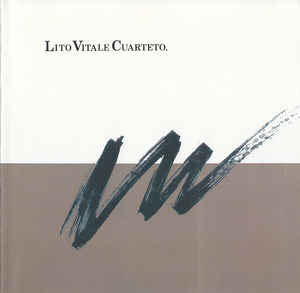

Músico
Talentoso pianista, a corta edad comenzó a tocar el piano que estaba en su casa, aprendiendo de su padre Rubens Vitale, también músico. Junto con otros colegas músicos vecinos del partido de San Isidro en el Gran Buenos Aires, formaron la cooperativa de música «MIA» (iniciales de «Músicos Independientes Asociados») «MIA» (iniciales de «Músicos Independientes Asociados») cuando contaba sólo 12 años. «MIA» se hizo popular en los ambientes de rock progresivo a fines de los años 1970. Otros músicos arrancaron a través de MIA, incluyendo a su hermana Liliana, a la cantante Verónica Condomí, y a los instrumentistas Juan del Barrio y Daniel Curto.
